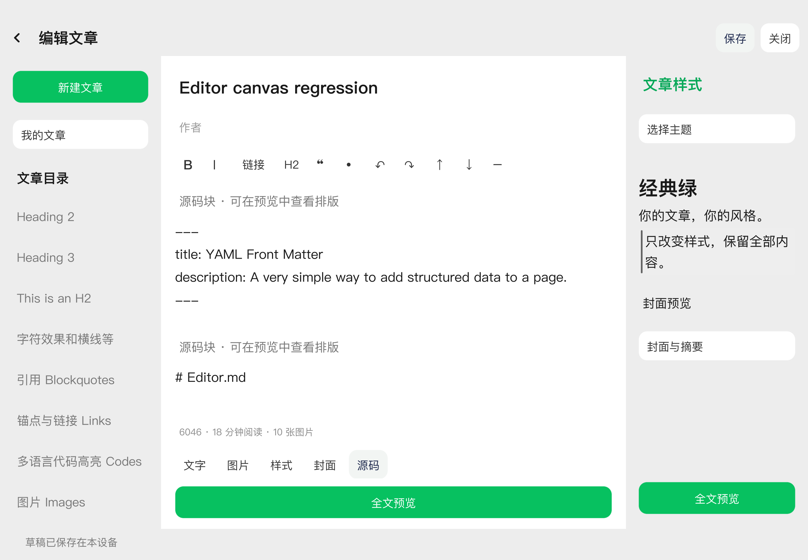
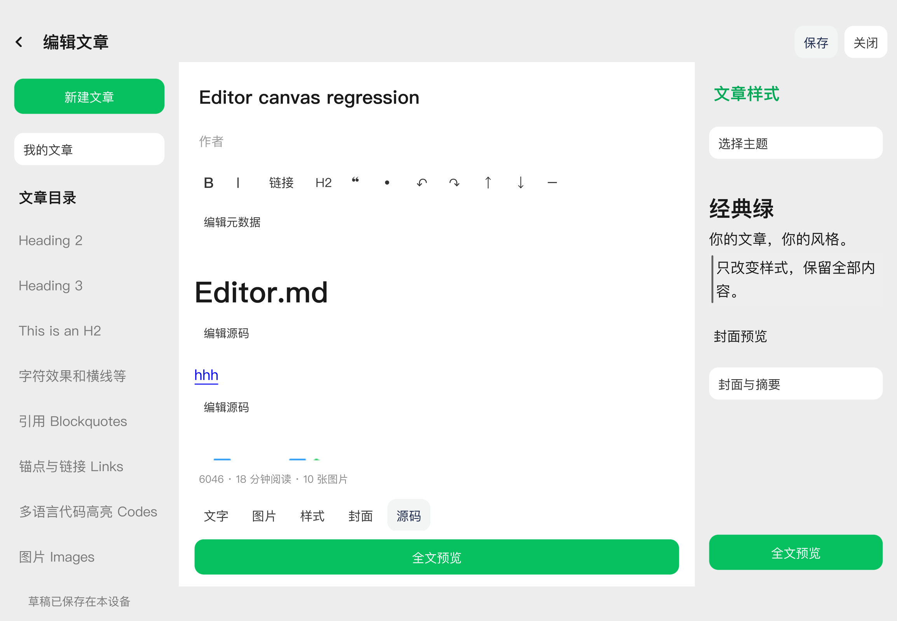
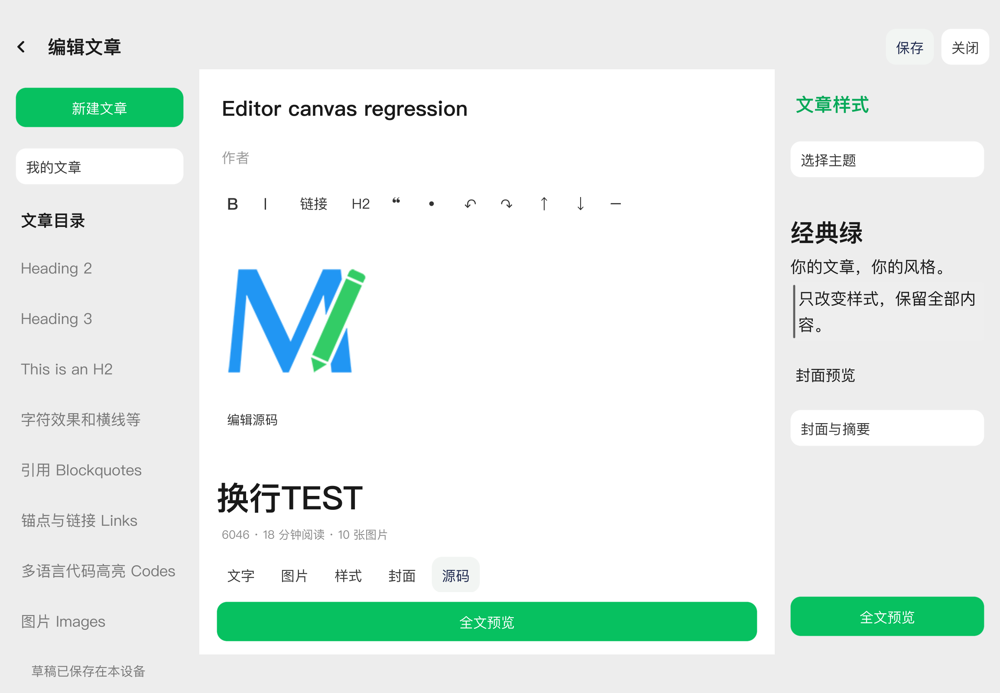
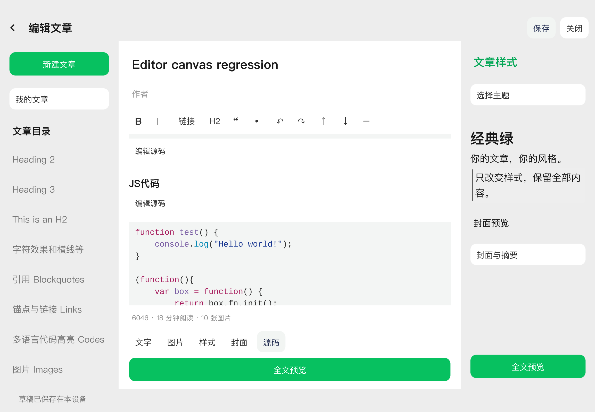
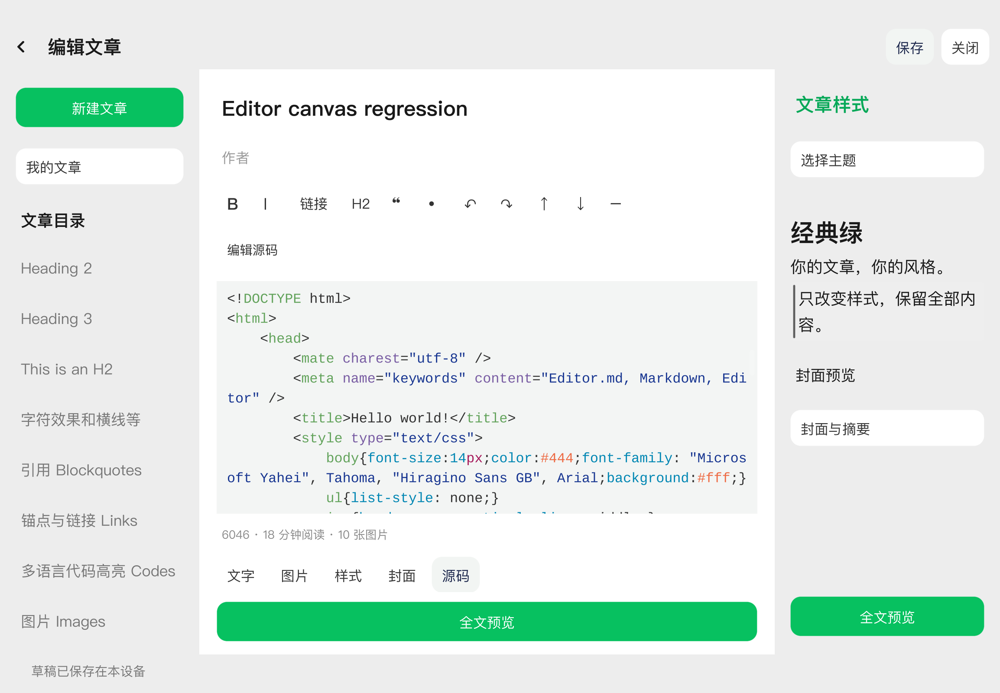
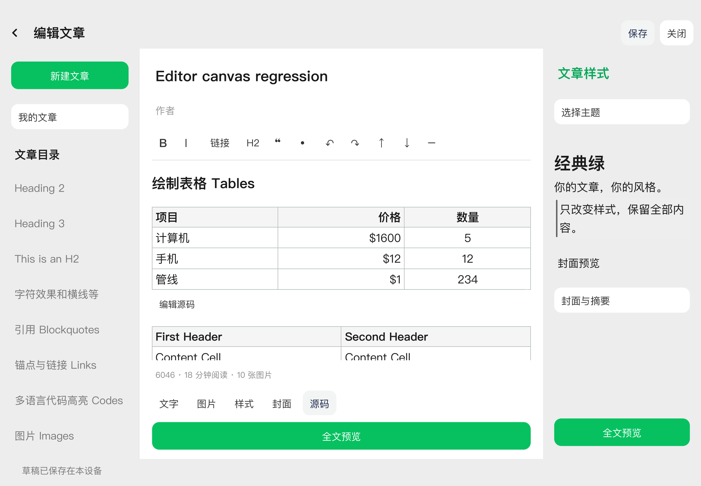
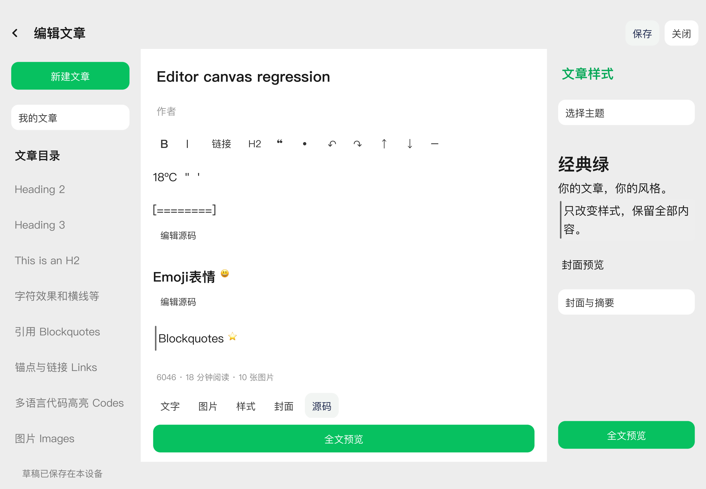
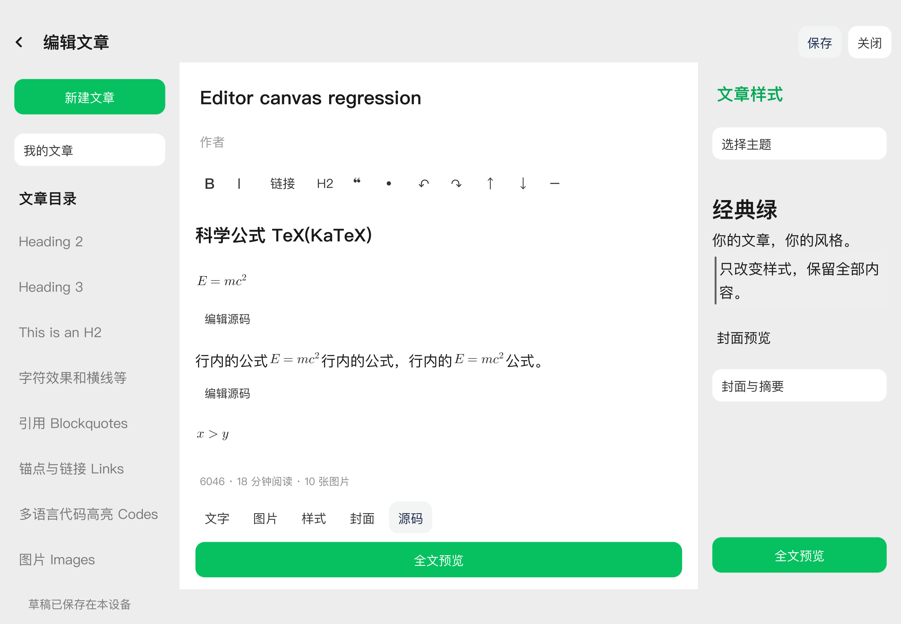
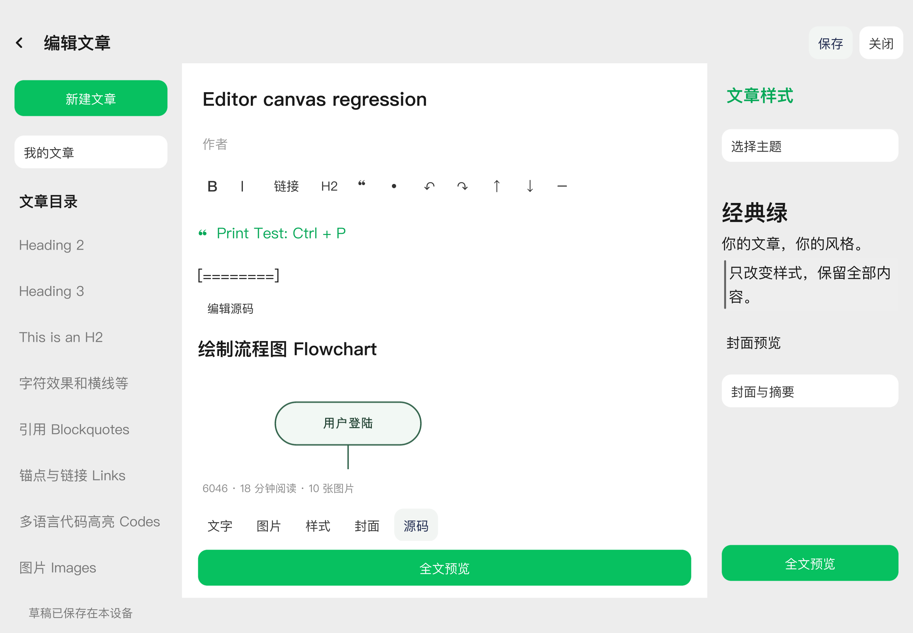
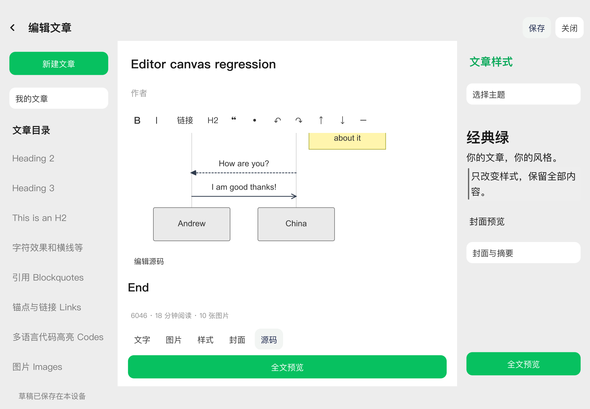
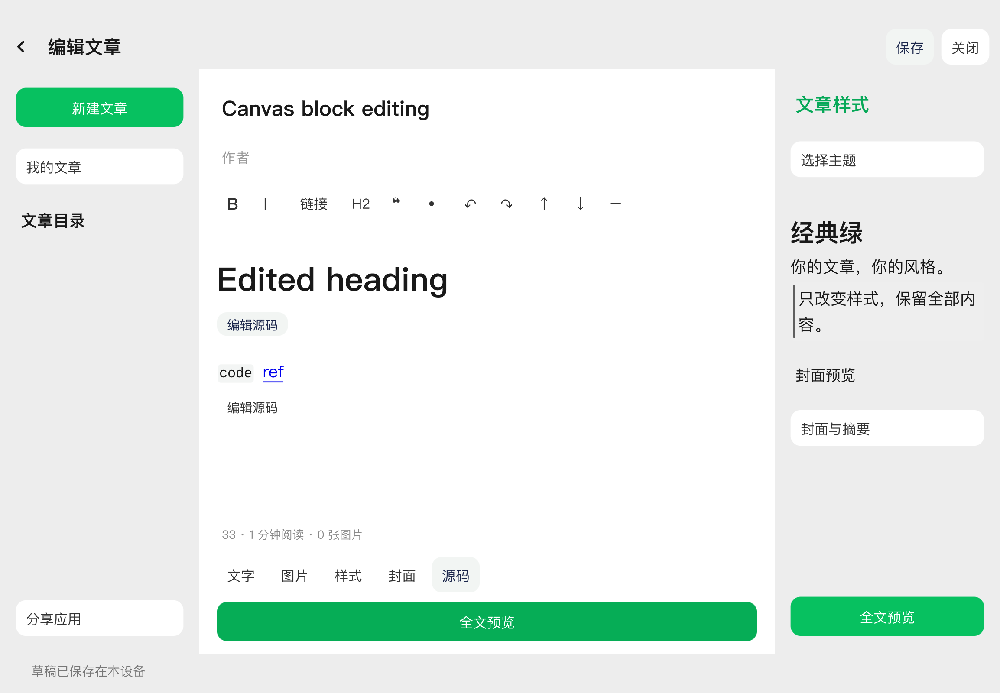
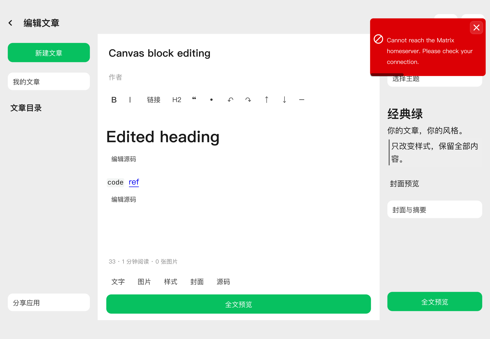
Real Makepad captures of the supplied Editor.md sample in the editing canvas. Sixteen native checks passed on the signed executable; all instrumented windows stayed hidden. Seven native rich-text selection checks also passed. These are an isolated test profile, not the user's account.
Native checks · Selection checks · Installation receipt · Implementation and limits
Tested binary: 0580f55a222fb543243645db065e6654c10e9008dcde0b151a0b9a5a70a754c0











